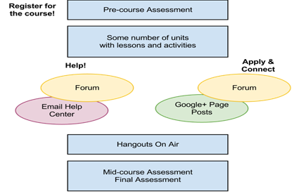

Si usted no hace nada para su TAs para conseguir que preparado, tener por lo menos una
sesión en la que introducir a lo largo ya lo que serán sus responsabilidades en
todo. Esta página es un ejemplo de plantilla para la información que debe
incluir en esa sesión.
- ¿Qué
estamos haciendo? ¿Por qué?
- ¿Quién
está en el Proyecto de Energía Curso de búsqueda?
- La
experiencia de los estudiantes
- Lo
que distingue a este curso de un curso en línea tradicional?
- Objetivos
del curso
- ¿Qué
hay en el curso?
- Responsabilidades
de asistencia técnica para curso piloto
- Responsabilidades
de asistencia técnica para el lanzamiento curso
- Cómo
moderar el foro curso
- Cómo
moderar la página del curso Google+
- Al
final de su turno TA hora de oficina
¿Qué estamos
haciendo? ¿Por qué?
¿Cuál es el objetivo del curso? ¿Cuál
será el TA salir de estar tas?
¿Quién está en el Proyecto de Energía
Curso de búsqueda?
Todo el mundo trabajando para el curso
listo. Incluya
los propios TA!
La experiencia de los
estudiantes

¿Lo que distingue a este curso de un
curso en línea tradicional?
Gran número de participantes y la comunidad
Objetivos del curso
- Los
participantes pueden mejorar algo relevante para su material.
- Un
número significativo de solicitantes de registro completar el curso (con
el objetivo de más de mil N)
- Los
participantes se sienten bien soportado por los seres humanos en todo el
curso.
¿Qué hay en el curso?
- El
curso consta de N unidades, cada una de las cuales
debe llevar a los estudiantes M minutos en
completarse.
- Cada
unidad contiene varias lecciones y actividades.
- Una
lección se compone de un vídeo de corta duración y una versión de texto
del mismo material.
- Una
actividad es un número de preguntas para que los estudiantes
respondan. Las actividades no se califican.
- Si
observa algún problema con el contenido del curso o tiene comentarios, por
favor háganoslo saber creador del curso:.
Es necesario crear un mecanismo para ello. Por ejemplo,
puede hacer que se envíe un correo electrónico a una dirección particular,
o puede crear un documento de hoja de cálculo o compartida para que los
utilicen.
Responsabilidades de asistencia técnica para
curso piloto
- En algún
momento, inscribirse en el curso piloto.
- Durante
la prueba piloto en algunas fechas posteriores, aprender
y probar el contenido del curso en diferentes dispositivos y navegadores.
- Sentarse
por separado el uno del otro.
- Si
el curso se está creando detrás de un firewall, pero estarán disponibles
fuera de ese firewall, cierre la sesión de su cuenta detrás del
firewall. Utilice una cuenta fuera del servidor de seguridad para
poner a prueba el curso. (Esto le permite estar seguro de que está
viendo exactamente lo que los estudiantes van a ver.)
- En algún
momento después de que el piloto, se reúnen con todos los
participantes en el piloto para proporcionar información y hablar de los
problemas detectados durante la prueba piloto.
- A
medida que tome el curso, familiarizarse con la terminología que se
utiliza con los estudiantes.
Responsabilidades de asistencia
técnica para el lanzamiento curso
- Esté
preparado para ayudar a los estudiantes a sentirse bien apoyado.
- Regístrate
para N horas (hoja de inscripción )
para apoyar la puesta en marcha curso en todo el mundo en estas
fechas.
- Antes
del inicio del curso, leche en la documentación de asistencia técnica para
tener una idea del creador Curso qué preguntas
esperar y cómo interactuar con los alumnos:.
Tienes que escribir esos documentos. y apuntar a ellos
aquí.
- En la
fecha del inicio del curso, asistir a la reunión TA
pre-lanzamiento para revisar sus instrucciones.
- TAS,
podrás comprobar en los tres mecanismos de interacción que tenemos para
los estudiantes:
- Grupos
de Google Forum
- Mensajes
Google+ página
Cómo moderar el foro curso
- Entrar
al foro curso usando el help@example.com cuenta
con la contraseña somepassword.
- Tenga
en cuenta que muchos enlaces foro están bloqueadas (es decir, no se puede
responder a ellos) hasta que la unidad asociada entre en
funcionamiento. Un administrador del curso desbloquear los mensajes
en los momentos adecuados.
- Durante
su turno:
- Haga
clic en "Mostrar todos los temas" para ver todos los mensajes
publicados en el foro.
- Elimine
los mensajes de spam o comentarios.
- Una
vez que haga clic en un mensaje, no puede ser leído de nuevo. Si se
requiere una acción, debe hacer algo con él - responder a la misma,
escalar, o enviar la URL a ayudar @ TA para otro para recoger.
- Al
leer un mensaje nuevo, haga una de las siguientes cinco cosas:
- Para
los puestos nuevos (en negrita) que muestra actividad saludable y la
conversación, el estímulo oferta que impulsa un mayor intercambio:
- "Esa
es una gran idea. Si otros están leyendo, por favor pipa con más
pensamientos."
- "¡Guau, qué una observación interesante. ¿Qué han
descubierto otros?"
- "Interesting! ¿Alguien más ha notado esto?"
- Para
los nuevos puestos (en negrita) donde las preguntas se les pide y ningún
participante ni TA ha proporcionado respuesta todavía:
- Una
insignia personal aparece junto a su nombre cuando Publicar respuesta,
demostrando que el comentario es de personal del curso.
- Si
usted sabe cómo responder a ella, ir a por ello! Publicar
respuesta.
- Si
no sabe la respuesta y no son capaces de seguir en el momento, por
cualquier motivo, enviar la dirección URL del post en el foro para
help@example.com y solicita otra asistencia técnica para manejarlo.
- Si
usted no sabe la respuesta, pero será titular y ayudar a ir tras ella,
las cosas son un poco más complicado?
- Responder
atrás "Gracias por su buena pregunta. Voy a investigar esto y
volver a ti." Añadir una estrella al mensaje, que significa
"escalada en curso".
- Ir
a la ayuda @ cuenta de correo electrónico y busque el mensaje de correo
electrónico que se corresponde con el mensaje en el foro. Cada
mensaje en el foro y la respuesta se enviará por correo electrónico para
ayudar @. Se encuentran bajo el filtro "mensajes del
foro." Investigación o escalar a los alias apropiados:
- experts@example.com (contenido o curso relacionado-)
- techhelp@example.com (cuestión técnica o de registro)
- prhelp@example.com (prensa, confidencial, relacionada con el
producto)
- Si
la respuesta vuelve a su turno, responder al mensaje en el foro con la
respuesta y eliminar la estrella del poste.
- Si
la respuesta no vuelve a su turno, el TA próximo mantener un ojo en los
mensajes destacados en el correo electrónico. Cuando la respuesta
se vuelve de los alias, copiar y pegar la respuesta en el hilo en el
foro. Retire la estrella del poste.
- Registre
la pregunta y la respuesta en la Guía de Respuesta TA, si usted cree que
será útil para la TA otro.
- Para
mensajes antiguos marcados con un asterisco (para indicar que está en el
proceso de escalado)
- Compruebe
los mensajes destacados en ayudar @ gmail. Responder
a las preguntas si puedes. Ver f paso anterior.
- Si
usted ve que odian o comentarios negativos sobre un mensaje, responder con
un comentario breve y positiva que no acicate más negatividad:
- "Gracias
por su colaboración!"
Cómo moderar la página del curso
Google+
- Entrar
al foro curso usando el help@example.com cuenta
con la contraseña somepassword.
- Echa
un vistazo a los postes. Todos los mensajes son los administradores
de los cursos.
- No
responda a los comentarios de los puestos. En cambio, cuando te das
cuenta de observaciones:
- Si
el comentario es spam, vamos administrator@example.com saber
lo que el comentario puede ser eliminado.
- Si
el comentario debe ser respondido, experts@example.com email
Al final de su turno TA hora de
oficina
- Por
favor, asegúrese de mantener charla "off" / invisible / cerrado
la sesión en la cuenta @ ayuda.
- Agregue
las soluciones interesantes que has descubierto la Guía de Respuesta
TA.
- Si
es posible, dé el siguiente turno de TAs una
sesión informativa sobre cualquier suceso que se debe tener en cuenta (por
ejemplo, problemas conocidos).
Este texto es una traducción de las páginas Wiki del manual
de Course Builder